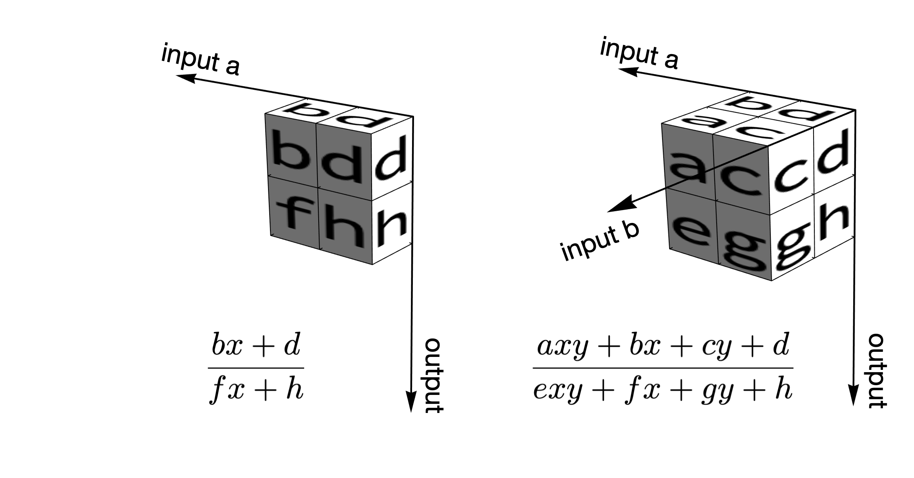

We have been dealing with one continued fraction at a time. In those situations, all operations involve functions of the form \(f(x) = \frac{px+q}{rx+s}\). They are known as homographic functions, and they can be represented by the matrix \(\begin{bmatrix} p & q \\ r & s \end{bmatrix}\). How do we generalize it to operations involving two continued fractions?
The problem is solved with bihomographic functions of the form \(f(x, y) = \frac{axy + bx + cy + d}{exy + fx + gy + h}\), where \(x\) and \(y\) are the unknown terms for the two continued fractions \(a\) and \(b\) respectively. We can write it in matrix form as:
\begin{equation*} f(x, y) = \begin{bmatrix} 1 & y \end{bmatrix} \begin{bmatrix} b & d \\ a & c \end{bmatrix} \begin{bmatrix} x \\ 1 \end{bmatrix} \bigg/ \begin{bmatrix} 1 & y \end{bmatrix} \begin{bmatrix} f & h \\ e & g \end{bmatrix} \begin{bmatrix} x \\ 1 \end{bmatrix} \end{equation*}What happens when a new term \(a_n\) of \(a\) is received?
\begin{equation*} f(a_n + \frac{1}{x}, y) = \begin{bmatrix} 1 & y \end{bmatrix} \begin{bmatrix} a_n b + d & b \\ a_n a + c & a \end{bmatrix} \begin{bmatrix} x \\ 1 \end{bmatrix} \bigg / \begin{bmatrix} 1 & y \end{bmatrix} \begin{bmatrix} a_n f + h & f \\ a_n e + g & e \end{bmatrix} \begin{bmatrix} x \\ 1 \end{bmatrix} \end{equation*}This is familiar, isn't it? It's exactly the same update rule that we use for updating the convergents! All we need to do is to right-multiply \(\begin{bmatrix} a_n & 1 \\ 1 & 0\end{bmatrix}\) the two matrices.
We can do the same with a new term \(b_n\) for \(b\):
\begin{equation*} f(x, b_n + \frac{1}{y}) = \begin{bmatrix} 1 & y \end{bmatrix} \begin{bmatrix} a & c \\ b_n a + b & b_n c + d \end{bmatrix} \begin{bmatrix} x \\ 1 \end{bmatrix} \bigg / \begin{bmatrix} 1 & y \end{bmatrix} \begin{bmatrix} e & g \\ b_n e + f & b_n g + h \end{bmatrix} \begin{bmatrix} x \\ 1 \end{bmatrix} \end{equation*}This is basically the same thing, except that the direction is different. This corresponds to left-multiplying \(\begin{bmatrix} 0 & 1 \\ 1 & b_n\end{bmatrix}\).
The above suggests an elegant way to visualize continued fraction arithmetic: if we imagine that two matrices form a 2x2x2 cube, this cube moves leftwards upon receiving a new term of \(a\), and it moves downwards upon receiving a new term of \(b\). As before, we'll also use the Euclidean algorithm to convert the bihomographic function into continued fractions. When we get to perform the Euclidean step, the 2x2x2 cube moves in the third dimension. The following figure illustrates that continued fraction arithmetic is a direct generalization of the 2D case:

Something is curious about the discussion so far. We have a generic method for ingest two continued fractions, but how do we actually do any computation on them? It's not hard to see that it all depends on the initial matrices. With appropriated chosen initial matrices, we can do multiplication, addition, division, subtraction, and their combinations. I think it's quite a remarkable result, because when we are dealing with numbers with multiple terms, multiplication is usually harder than addition. With continued fraction, the computational steps are exactly the same!
I made the following two figures to explain how addition and multiplication are done. Here's \(a+b\). We begin with just the initial matrices (first row), add the first term of \(a\), and then add the first term of \(b\).

Here's the same process for multiplication: